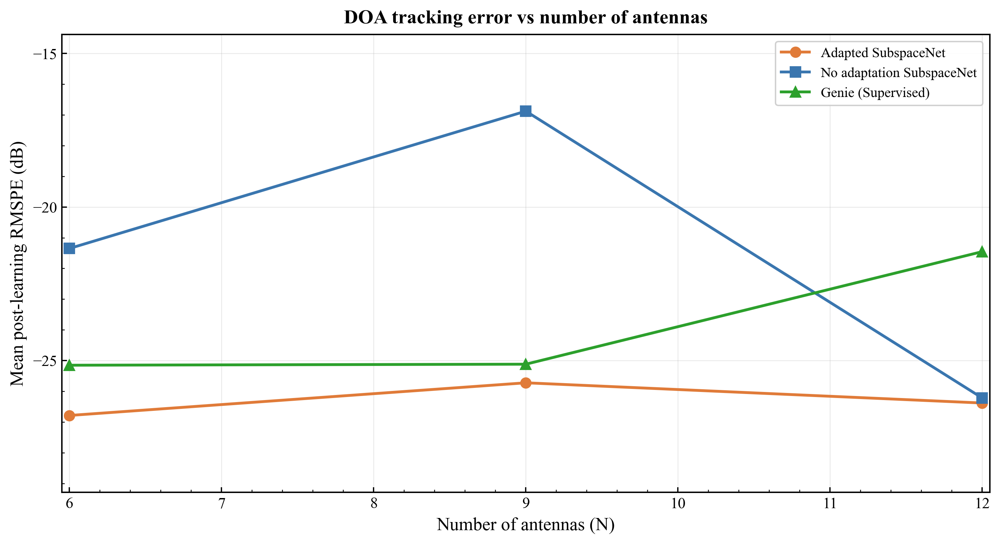
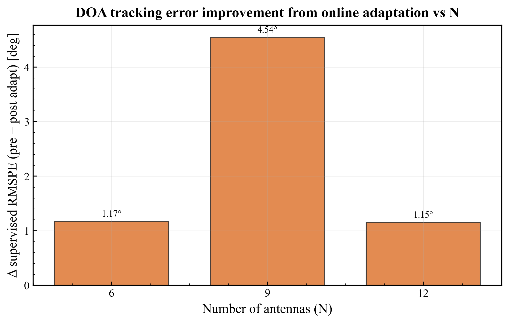
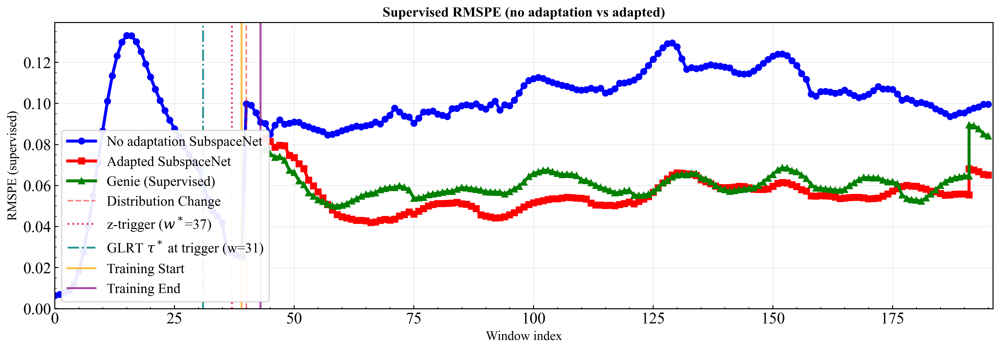
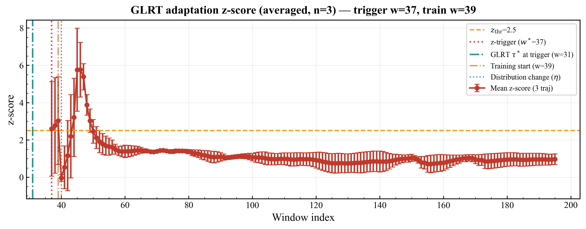
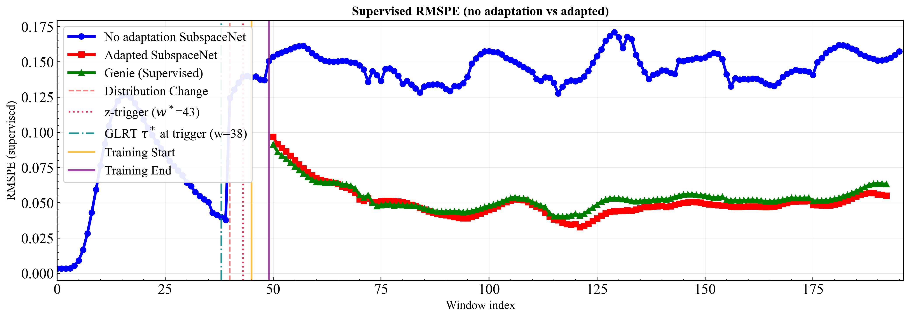
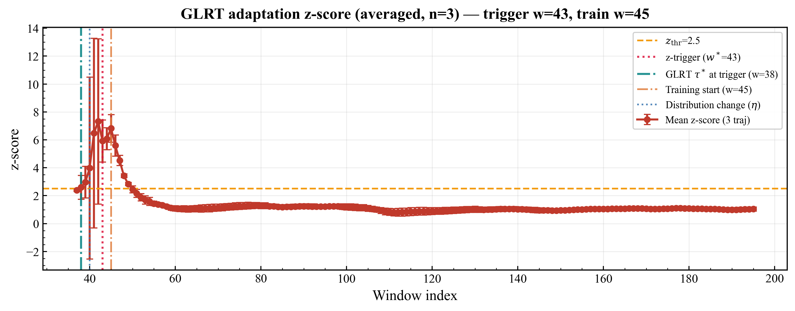
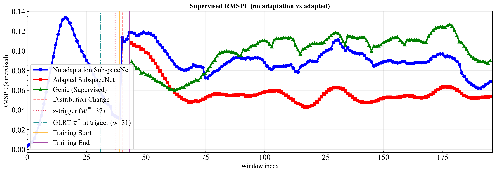
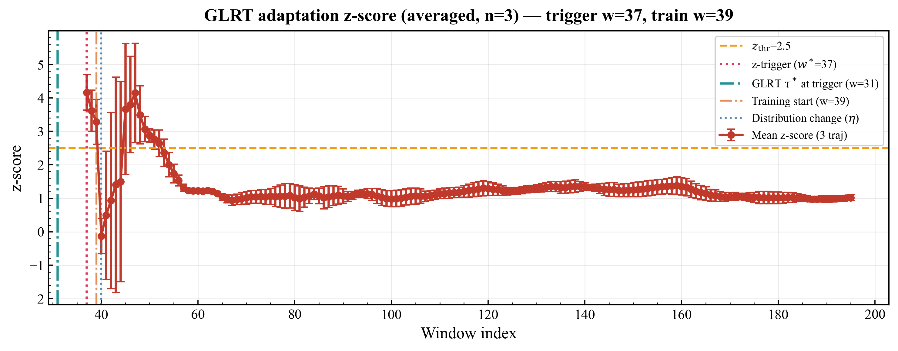

T1 — Antenna sweep (SubspaceNet) smoke ds=3
Current protocol: N ∈ {6, 9, 12} only (N=18 dropped). Position-η jump @ w40 with per-N η tuned on pre-EKF early stress (w45–55). Run: T1_pre_ekf_eta_smoke.
Drift model
Random per-sensor position calibration error (not spacing-scale — rejected: does not move SubspaceNet pre-EKF). Stress is characterized by pre-EKF supervised RMSPE: SubspaceNet raw output before EKF smoothing.
| N | η @ w40 | pre-EKF early (rad) | pre peak (rad) |
|---|---|---|---|
| 6 | 1.0 | 0.29 | 0.41 |
| 9 | 0.9 | 0.44 | 0.58 |
| 12 | 3.0 | 0.29 | 0.36 |
N=12 needs η=3 to match N=6 pre-EKF (~0.29 rad). N=9 remains highest stress at η=0.9. EKF still shaves pre-EKF → use both panels when reading plots.
Findings (T1_pre_ekf_eta_smoke)
- All three N now show meaningful pre-EKF spike post-drift (not the N=12/18 “EKF-only” regime at uniform η=0.9).
- EKF late supervised (w80–120): N=9 +5.2°, N=6 +3.5°, N=12 +2.4° vs pre — sustained EKF stress on matched protocol.
- Adaptation should close gap between no-adapt EKF and ours — see Results tab.
Paper-relevant configuration
- YAML
- configs/Used_for_paper/paper_T1_antenna_sweep.yaml
- Notes
- configs/Used_for_paper/paper_T1_pre_ekf_calibration_notes.yaml
- Sweep
- N ∈ {6, 9, 12} — per-N checkpoints + per-N η
- η by N
- scenario_config.eta_increments: [1.0, 0.9, 3.0]
- Drift
- position_eta, jump @ w40, warmup=18, stride=1
- Fixed
- M=3, SNR=10, T=200, EKF Q=0.06 R=0.03
- Smoke
- dataset_size=3, seed=42
- Verify
- python3 scripts/calibrate_T1_pre_ekf_eta.py <benchmark.json>
T1_pre_ekf_eta_smoke — aggregate

experiments/results/smoke_runs/journal_paper/T1_pre_ekf_eta_smoke/scenario_results_comparison.png
EKF supervised reference metric vs window — no_adapt / Adapted SubspaceNet / Genie.

…/T1_pre_ekf_eta_smoke/antenna_adaptation_improvement_vs_n.png
N = 6 (η=1.0)

…/n_6.0/averaged_online_learning_comparison_main_loss.png

…/n_6.0/glrt_adaptation_z_score_averaged.png
N = 9 (η=0.9, training array)

…/n_9.0/averaged_online_learning_comparison_main_loss.png

…/n_9.0/glrt_adaptation_z_score_averaged.png
N = 12 (η=3.0)

…/n_12.0/averaged_online_learning_comparison_main_loss.png

…/n_12.0/glrt_adaptation_z_score_averaged.png